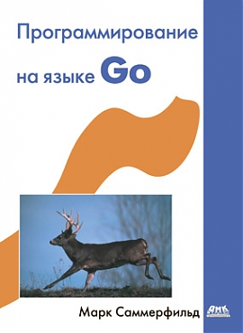

|
Apr 06, 2014
|
Go замечательный язык программирования, который можно компилировать,
компилировать под разные платформы (ARM, x86), распараллеливать. Он
проще C/C++ и уже сформировавшийся язык в отличии от Rust который
ломает программы с каждым обновлением. Область применения самая разная начиная
от консольных утилит, всяких парсеров, системного, сетевого ПО, связи с
физическими устройствами и заканчивая веб приложениями, разве что пока нету
реализаций под смартфоны (android).
На Go уже написаны:
Здесь я опишу процесс одной из возможных реализаций установки Go под Linux.
См.также
Более простой способ moovweb/gvm
~/golang например:$ tar -C ~/golang -xzf go1.2.1.linux-amd64.tar.gz
Добавляем в ~/.bashrc:
# Go lang
export GOROOT=$HOME/golang
export PATH=$PATH:$GOROOT/bin
создаем файл hello.go:
package main
import "fmt"
func main() {
fmt.Printf("hello, world\n")
}
и выполняем так:
$ go run hello.go
hello, world
или компилируем:
$ go build hello.go
$ ./hello
hello, world
теперь у нас установлен go в системе. Если вам нужно свои пакеты хранить в
другой директории (не $HOME/golang), но при этом что бы они находились в
общем окружении, то можно задать переменную окружения GOPATH. У меня всё
вместе выглядит так:
# Go lang
export GOPATH=$HOME/Projects/go
export GOROOT=$HOME/golang
export PATH=$PATH:$GOROOT/bin:$GOPATH/bin
есть много дополнений для go но самая крутое из них это https://github.com/fatih/vim-go
пример .vimrc:
au BufNewFile,BufRead *.go set ft=go nu
au FileType go map <leader>r :!go run %<CR>
Bundle "fatih/vim-go"
vim-go умеет:
книг много, но на великом только одна от издательства ДМК пресс, к счастью есть эл.вариант книги хоть и в pdf.
